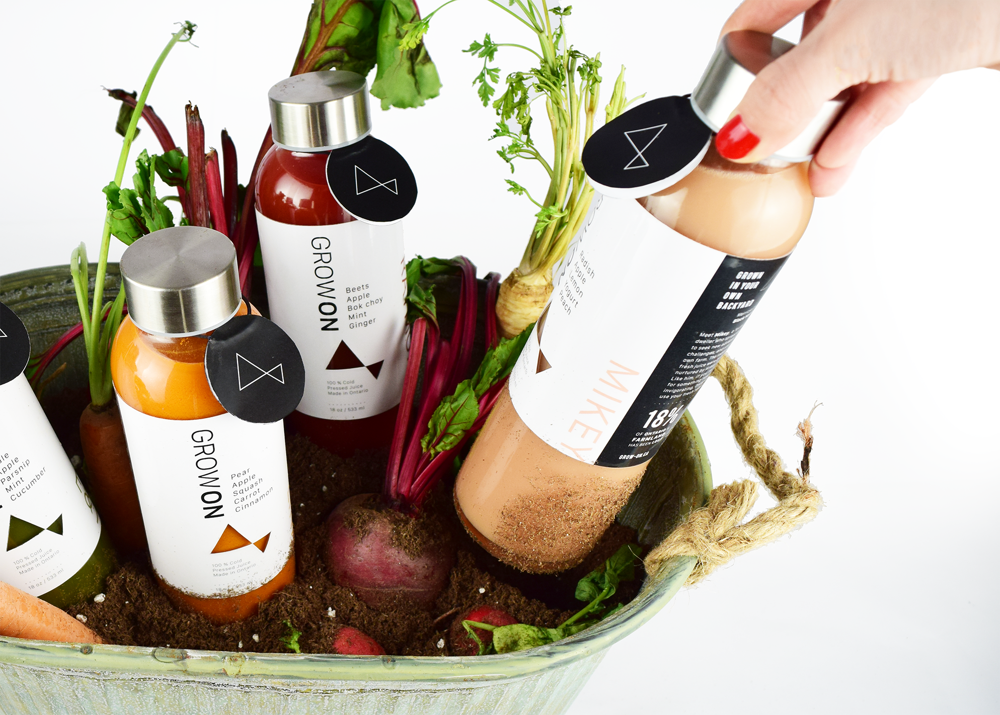
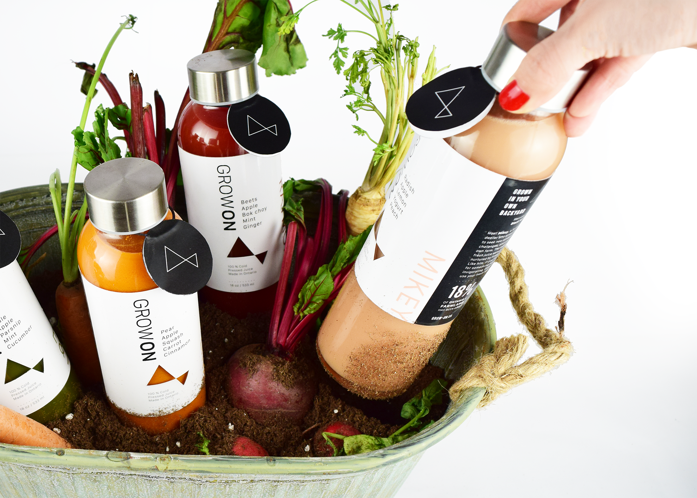

About
Grow ON is a movement to revitalize the farming demographic of Ontario for future sustainability of the industry and environment.
Our mission is to rejuvenate and reinvigorate the Organic Farming Industry of Ontario through awareness, networking and education. By raising awareness of the current agricultural struggles and promoting the prosperous opportunity, we wish to educate young adults on how to start their own farming business while leveraging a vast cooperative network of resources.
The design strategy contains three phases. First one is to raise awareness/evoke—using marchandise to reach out our target audience and gain attention. Secondly, website to educate them and lastly mobile app to help them pursuit agricultural career.
Objective
For the first stage, the objective for the packaging design project is to create a series of products and packaging design/concepts to reach out target audience and raise awareness. Since those who are already into organic foods are more likely to be interested in organic farming than those who do not, we decided to focused on cold pressed juice. Cold pressed juice. Cold juice is a method to produce juice without any added ingredients as they are made of 100% vegetables and fruits. It has gained public popularity mainly from 2013 and main consumers are ages between 20 to 35 years old which is right on our target audience.
We decided to focus on connecting dots—our target audience to current young farmers in Ontario by telling their farm stories. Actual stories are the fact and prove. Fact speaks to data based young generations.
Currently there are four Ontario farm ambassadors and we named each juice their name instead of traditional way which is naming from ingredients or flavour.

Those dots are also used to locate the farm where the ingredients in the cold juice are coming from and where the farm stories happen.

On the back side of the kabel, we decided to communicate the farmers story and background with little facts and reasons why we need more farmers in Ontario and organic farming could be their future career path to choose.
Bottles tested…
We needed to find the perfect shape to work with GROWON logo and its brand image to convey stylish and high end to show the prosperity of future of agricultural career. There are lots of money involved.. In fact, demands for organic foods in Ontario is increasing at a rate of roughly 10% and it’s a over $1 billion consumer market in Ontario alone. Bang!
We finally met a perfect shaped glass bottle which works smoothly with curvy GROWON logo, sophisticated and stylish bottle in a affordable one to manufacture.
Initial label design
In order to make the most use of natural colour of cold pressed juice, we created white inked screen printing design. However both screen printing and alternative transparent clear label cost and it was out of our budget. We came up with the most economical yet stylish way of label with a diecut of GROWON logo on it for the accent.

Those products would be sold at local farmer’s market, selected some cold pressed juice stores as well as at a organic vegetables and fruits section at major grocery stores.
In order for people to experience and feel the farm and soil, we came up with unique display for some places to showcase the products.
Yes. It is literally in the soil with vegetables for consumer to pull. It’s the idea of from farm to you and little experience of harvesting.
 
